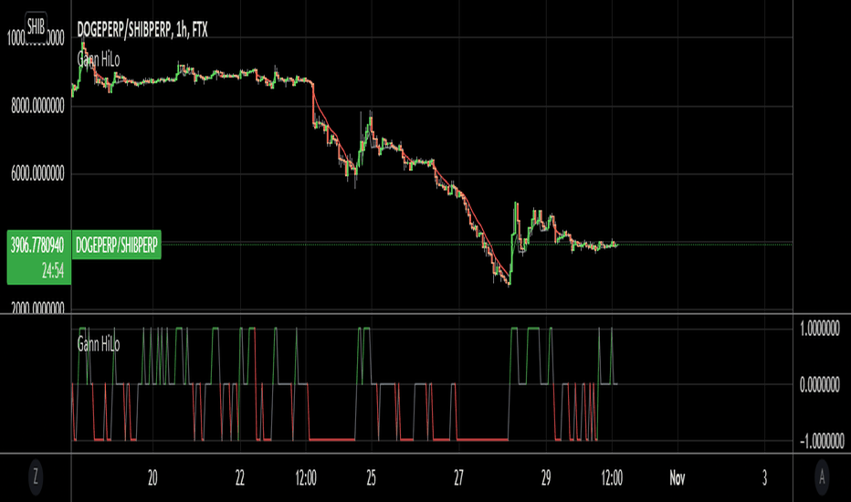

Learn to analysis share market
There are two main types of analysis in share market
Fundamental Analysis📊
Technical analysis📊📈

In this web we can learn some important points about Technical analysis:
Technical analysis is a method of analyzing and predicting price movements in financial markets by studying historical price and volume data. It's based on the idea that price movements follow identifiable patterns and trends that repeat over time.
Principles

Technical analysis is based on three main principles: the market discounts everything, prices move in trends and countertrends, and price action is repetitive.
Charts and indicators

Technical analysis relies on charts and indicators to predict future movements. For example, a horizontal line on a price chart can represent a security's support or resistance level.
Approaches
There are two approaches to technical analysis: top-down and bottom-up. The top-down approach looks at the overall economy before focusing on individual securities, while the bottom-up approach focuses on individual stocks.
History
Dow introduced technical analysis in the late 1800s as the Dow theory
Book for beginners
Click to Buy